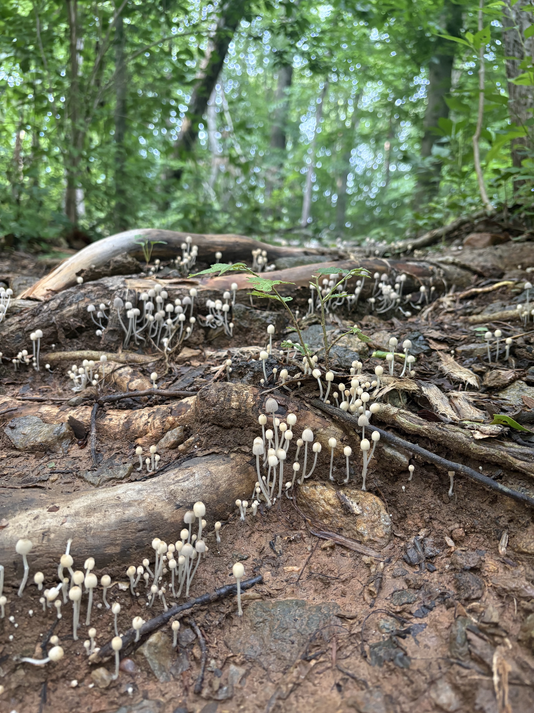
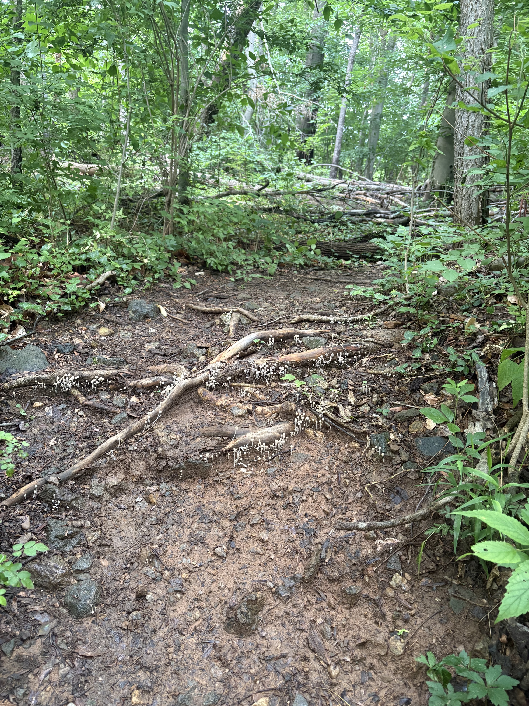

A newsletter and a handful of essays connecting biosecurity and AI-safety work to the broader project of supporting living systems.


"AI-Ready Biodata Is America's Next Strategic Infrastructure." Read on War on the Rocks →
"U.S. Biotech Leadership in the Age of AI." Read on Just Security →
"Relational biosecurity," 2026. doi.org/10.3389/fmicb.2026.1856819
Barrett et al., Nucleic Acids Research, 2013. Most-cited work, introducing GEO2R. doi.org/10.1093/nar/gks1193
Hurwitz, Holko, et al. (with Melissa Haendel), JMIR mHealth and uHealth, 2024. doi.org/10.2196/54622